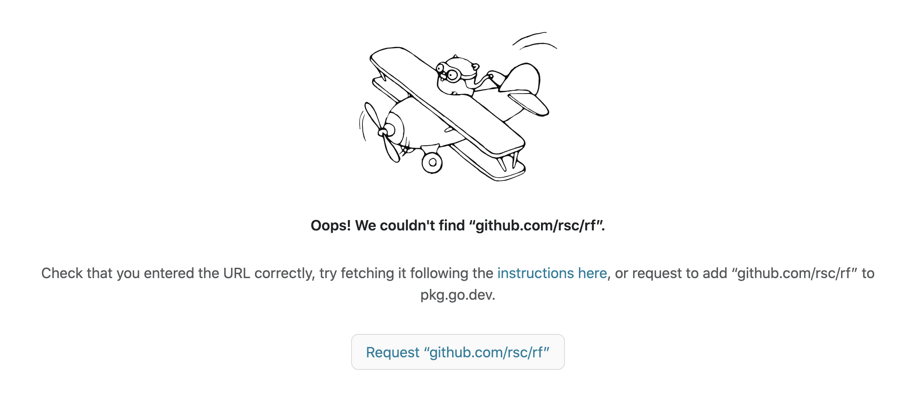

Russ Cox 又有动态了：开源了一个 Go 工具
前天发了一篇文章，介绍了 Go 的名人，Go Team 现在的 Leader Russ Cox 。
01
这两天在大牛的 GitHub 上看到他开源了一个新的工具：一个实验性的，用于 Go 语言的重构工具。
项目地址：https://github.com/rsc/rf。
开源后，立马有人跟进：https://changelog.com/news/russ-coxs-experimental-new-refactoring-tool-for-go-NoN0
It’s just 18 commits deep at the time of logging, but when one of Go’s authors fires up a new project (and a refactoring tool at that), it’s worth following along to see what develops.
目前该工具还不成熟。我初步猜测，如果成熟了，可能会被用于各大文本编辑器，辅助进行 Go 代码重构。
目前项目的 README.md 上没什么说明，但有一个 doc.go 文件。我尝试使用 pkg.go.dev 查看，发现 404：https://pkg.go.dev/github.com/rsc/rf

这时点击下方的 Request “github.com/rsc/rf”，页面提示：
“github.com/rsc/rf” is not a valid package or module. Were you looking for “rsc.io/rf”?
因此改为 https://pkg.go.dev/rsc.io/rf 即可正常访问。在该项目的 go.mod 文件中开头有这一行：
module rsc.io/rf
官方号称 pkg.go.dev 是更懂 go mod 的，我觉得访问 https://pkg.go.dev/github.com/rsc/rf 应该能自动重定向到 https://pkg.go.dev/rsc.io/rf 才对。有兴趣的可以看看 rf 的文档。
知识点：上面 github.com/rsc/rf 之所以可以定义为 rsc.io/rf，是因为 rsc.io/rf 做了自定义包导入路径。你可以通过
curl https://rsc.io/rf命令，查看输出结果，其中有这么一行代码：<meta name="go-import" content="rsc.io/rf git https://github.com/rsc/rf">这是关键。
02
借此，介绍 Russ Cox 另外两个开源项目，当然是 Go 语言实现的。
- Two-factor 验证命令行工具，Star 数 1.1k+，项目地址：https://github.com/rsc/2fa；
- 大型文件树上的快速索引正则表达式搜索工具，Star 数 2.5k+，项目地址：https://github.com/google/codesearch，他还专门写了文章介绍。Google 代码搜索是如何工作的？https://swtch.com/~rsc/regexp/regexp4.html
03
借用曹大（Xargin）的话，你应该在 GitHub 上关注那些大神，通过他们的动态可以发现好玩的东西，更可以学习到新东西！
我不是大牛，但我会经常 Star 一些 Go 项目，欢迎大家去 GitHub 关注我：https://github.com/polaris1119。